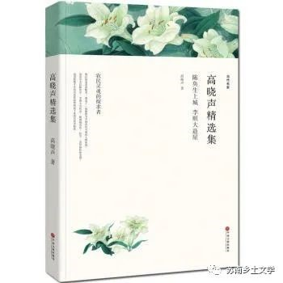

《高晓声精选集》
乡村形象
1、交通不便
乡村汽车站的下午是宁静的。小小的候车室里，散散落落放着几张靠背长椅，只有五六个旅客寂寞地在那里等车。他们的车票都已经买好了，但是还不知道什么时候能搭上车子；如果汽车在前一个站头已经满载了，到了这里又无人下车，它就直驶而过，不再停顿。这样的事情是常常发生的，今天下午就出现过两次。眼睁睁望着别人在前进，自己却停留在原地不动，总觉得有点怅惘。
——《系心带》
2、过去造房子的不易：经济原因+政治原因+官员腐败
陈家村上的种田汉，不但没有轻视他的奋斗目标，反而认为他的目标过高了。有人用了当地一句老话开头，说：“‘十亩三间，天下难拣’，在我们这里要造三间屋，谈何容易！”有的说：“真要造得成，你也得吃半辈子苦。”有的说：“解放后的世界，要容易些，怕也少不了十年积聚。”
——《李顺大造屋》
从那时开始，李顺大不再白花心计去买东买西，他挑着糖担，东转一天，西转一天，替国家收废品，赚一点生活费。可是，事情也怪，造房子的人家，还真多着呢。他看了不禁眼馋，往往就要打听打听，这幢那幢是谁家造的，哪里买的材料。得到的答复也真千种百样，细细说来，每一幢屋都能写一本书，但也不惹人看，无非是“大官送上门，小官开后门，老百姓求别人”而已。
——《李顺大造屋》
“不，哥哥。”浩泉胸有成竹，不假思索就说，“亲兄弟，近算帐，当年分开来过日子，哥哥你是说了那句话的。我也赞成的。谁想会碰到这断命的大跃进，把东西弄光了，肚皮都顾不及。这一跤跌下来，我们几时才积得起钱再造房子？我看等下去已经没有意思了，还是趁早正式分了吧。”
——《觅》
3、人民生活水平低下
赚了钱打算干什么？打算买一顶簇新的、呱呱叫的帽子。说真话，从三岁以后，四十五年来，没买过帽子。解放前是穷，买不起；解放后是正当青年，用不着；“文化大革命”以来，肚子吃不饱，顾不上穿戴，虽说年纪到把，也怕脑后风了。正在无可奈何，幸亏有人送了他一顶“漏斗户主”帽，也就只得戴上，横竖不要钱。
——《陈奂生上城》
4、人情往来
只是难为了陈奂生。吴书记的大面孔都派不上用场，他灰心丧气，没精打采告别了两位领导，走出办公室。王厂长随后也出来了，他看看陈奂生的背影，心里骂道：“穷煞胚！乡下人！衣裳没一身好的，还出来跑供销。呆头木雕，好话不会说一句，香烟不会递一根……你就是吴书记的小舅子，我也不睬你！”
——《陈奂生转业》
厂长这番话，真把传统的世道人情，放在太君炉里，炼得铿锵作响了。将来写 “关系学”教科书，是要放在总纲里面的。陈奂生听了，一肚子疙瘩统统从肚门里屙出来，果然药到病除，十分轻快。
——《陈奂生包产》
5、开始重视身体锻炼
但是，老刘毕竟是很会照顾自己的人，不仅用不着我担心，倒是更值得我羡慕。我的身体，本来比他强，由于他坚持体育锻炼，我竟不如他了。确实，我们是很聪明的，终于找到了延年益寿的最好办法。参加体育锻炼的人越来越多了，在我家门前的广场上，每天从清晨三四点钟开始，就开始有各种各样的跑步声。
——《我的两个邻居》
6、简单的生存愿望成为了一种理想，因此把理想寄托于侥幸，妄想在河里摸到皮包，大发横财。生活异常艰难，这成为一种普遍的社会现象
这“另外”的办法又是什么呢？去抢吗？去偷吗？黄顺泉这号人当然不肯干；他只有两个办法，一是去讨饭，是现实的；另一个就是希望有一天拾到一笔钱，是不切实际的幻想。这幻想实在太无聊、太幼稚，难道天上真会落下米来吗，守株待兔有哪个不上当受骗呢！世界上从来不曾有哪一个胃是靠幻想喂饱的。
——《钱包》
范浩林和陆存秀，集中精力，一心扑在供应孩子们的衣食上，根本没有心思和能力去考虑其他的事情。三年的灾难弄得他们焦头烂额，把他们背上的负荷增加到不断喘息的程度。
——《觅》
7、气候特点：梅雨季节
江南的黄梅天。
大雨哗哗下着，像有千针万线，把天地密密实实缝合起来。
世界一片水汪汪。
漆黑的野外，伸手不见五指，空间像狭窄得仅能容身。各种水的响声——雨点打在烂泥地里的叭哒声，落在水面上的卜笃声，碰在阔叶树上的撒啦声，以及田水欢腾地经过缺口冲入河里去的轰轰声……像一支永远演奏不完的乐曲。江水还在倒灌进来，它从一条笔直的小河里奔腾向南，一路泼啦啦打着漩涡，冲进那十多丈宽的大运河里来，气势汹汹，一直撞到运河的南滩；然后大翻一个身，回旋着随大流滚滚东去。
——《鱼钓》
8、爱情受到公社、舆论和农村传统思想的限制，阶级特征明显
批评极尖锐，而且政策性很强，有说服力。没有牵强附会的地方，青年人可不可以找对象？可以。该不该谈恋爱？该。要不要婚姻自主？要。这些全不成问题。这些成问题岂不滑稽！岂不是封建了！坏是坏在一个革命干部，一个青年团员，找对象什么人不可以找？偏偏竟同一个资本家的小老婆搞到一起去！实在不像话。是可忍，孰不可忍！甚至还有更坏的，那女人连做资本家的小老婆都不够资格，已经是被抛弃了的。
9、生育观念：重男轻女
接在陈惠莲生了两个女娃之后不久，进门不到两年的范焕荣的妻子李玉媛一炮打响，头胎就生了个大胖儿子，就是范浩林。对于范全根来说，这就是他的长孙，是他能够寄希望于第三代的第一个实体了。按照惯例，长孙本来就在家庭中占有特殊地位，他有权利直接从祖父、母手里继承一点产业，例如“长孙田”之类的东西。所以，像范焕良这样的明白人，是能够猜到他父亲会有点东西给长孙的。是什么？有多少？就不知道了。
——《觅》
10、饥饿带来精神上的变化
长江三角洲尽管是一块得天独厚、极其富饶的宝地，但是经历过三年困难时期的人们，现在想起当年的情况，还会陡然变色。老百姓听说书的讲历史故事，讲到历史上的大荒灾，用了“赤地千里，寸草不生”的话，大家便目瞪口呆，不能理解。因为这儿的地，决不会赤。就是在冬天，田埂上也还有青草。荒灾再大，树皮草根，总还有吃。想不到灾难一来，果然也会饿死人。有一年春天，要不是靠紫云英帮忙，是会弄得饿殍遍野的。其实，当时的情形，何止关系到一个人的肚皮呢？难道它不影响一代人的精神吗？经历过这段生活的人们，思想上无不被打上深深的烙印。各种灵魂在这一个大灾难里会合了，显露了，分野了，成型了。他们纠缠着，争纷着，跑着，拖着，飞着，爬着，不断地公演一出出的悲、喜剧。
——《觅》
心得体会
《陈奂生上城》是作家高晓声创作的短篇小说。小说通过主人公陈奂生上城卖油绳、买帽子、住招所的经历及其微妙的心理变化，写出了背负历史重荷的农民在跨入新时期变革门槛时的精神状态。此外，他的《李顺大造屋》、《“漏斗户”主》、《陈奂生上城》、《钱包》等反映农民生活和命运的短篇小说，以深沉的思考，冷峻幽默的笔调，刻画出中国农民的各种形象和传统心态。“陈奂生”作为典型农民形象，他的人生轨迹是我们研究的重点